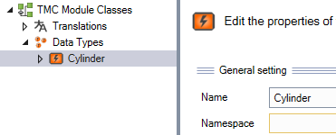

Simple Alarms
Alarms require a tmc file that contains generic information and configuration about the Event Class, along with PLC code to assign an Alarm function block to an Event Class, and the code to Raise and Clear those Alarms. So thats 3 parts, the data (tmc file), the alarm (FB_TcAlarm), and the connection between them (F_CreateAllEventsInClass).
The tmc file is created in the Type System. The Type System provides a way to create generic data types that can be referenced by the PLC code, and tasks external to the PLC. The motion controller, TwinSAFE, Vision, and even 3rd party software makes use of the Type System. Most of the time this part of TwinCAT is not used by the casual PLC programmer. But to implement the most flexible error handling possible, it is best to define those errors within the Type System. This will allow for them to be grouped together in classes and assigned Severity levels that can be referenced by the PLC code. Additionally, external software such as the HMI can access this information along with translation information and further details such as comments, and Cause/Remedy information when its provided.
Use a Sandbox
When first starting with the tmc editor it is recommended to get familiar with it in a sandbox environment before making changes on your actual project. See section on TMC File Errors below.
A new tmc file should be created for each set of alarms (Equipment Modules and Components). This modularity will allow for them to be portable between machines. If the alarm classes are all added to the same tmc file, it can become very large and more difficult to manage.
Create the tmc file
Warning
NO SPACES should exist in the tmc file. Any names created should be done so without spaces. If you notice any text box with a red background, fix this before saving the file.
The tmc files can be created within a single folder of the project in order to help more easily manage them later.
When a new tmc file is created there is one important feature that must be configured correctly to work properly with the SPT Framework.
The first event must be named as follows
1 | |
This allows for the PLC code to be consistent throughout the implementation. This first event should be at Pos 0 and Id 1.
Further events can be added in any order that you deem logical.
Once the events have been added the file must be saved and the Solution Rebuilt. In the Solution Explorer under System, right click on the Type System and select Add New Item.
In the Save As dialog box you should be at the project level. You can verify this by seeing the _Boot and _Config folders. By default, the folder path is: C:\Users\userName\Documents\TcXaeShell\projectName. Create a new folder for the tmc file at this location, call it tmcFiles.
Double click on the folder tmcFiles, provide a name for your tmc file (Cylinder) and select Save. Right click on the new Cylinder item in the Solution Explorer and select Edit Project File.
Right click on Data Types and select 'Add new event class.
Select EventClass1 and change the Name to match the tmc file name (Cylinder).

Expand the 2 items under Data Types. Select Events and add 2 items using the green plus sign. Select the first event and change the name to InitReferenceEvent.
Warning
It is important that this name matches exactly and is the first event in the list (Id: 1). In the PLC we will use some generic code that always references the InitReferenceEvent. Being consistent with the naming makes this possible.
Next, set the severity to Verbose.
Select the other two events and change the names to something valid for the error or warning you wish to create. In this example we will set one to warning, and the other to error. Also, change the Display Text to something meaningful, this text is what will be displayed in the Error List. Finally set the Severity to match the Warning and Error.
Close the tmc editor window and select Yes to save the tmc file. Double click the new tmc file under the Type System and select the Event Classes tab. Locate the Cylinder row and place a checkbox in the first column; it doesnt have a name.
This checkbox will add the event class to the Type System for this project. Rebuild the Solution and check that you have no errors.
TMC File Errors
No Spaces Allowed
Warning
Spaces are not allowed in the Name of the event or Data Type. This will be indicated by the text box turning red. If you do put a space in the name when you save the file it will be saved with the bad entry.
When you perform a Build -> Rebuild Solution, you will notice 2 errors in the Error List. The first error is in the TC_EVENTS file, and the second error is in the TC_EVENTS_CLASSES file.
You should first fix the error in the name before continuing.
Next, you must manually edit these files to remove these bad entries. Double click on the error in the Error list to open the files (TC_EVENTS and TC_EVENTS_CLASSES). While you can simply remove the line of code that contains the space in the variable name, it is recommended to remove all the data related to it.
While it is possible to have more than one bad entry. They should all be deleted.
Do not save the file, you can just simply close it.
After creating a proper tmc file, the event classes of that file should be associated with the Type System. After you make changes inside the tmc editor, when you close the editor you will be prompted to save the new tmc file. Click yes. You should now be on the Event Classes tab. The left column does not have a name, but it does have an empty check box. Click the check box, close the window, and click yes to save changes.
Libraries
Within the PLC project the following libraries are required for proper Alarming:
1 2 3 | |
Component Alarm Declaration
For this short sample we will place all the code within the MAIN POU. The first part of the PLC is the connection between the Alarm Function Blocks, and the Type System.
To do this we create an array of FB_Alarm (Tc3_EventLogger) and the other variables that will be used.
1 2 3 4 5 6 7 8 | |
1 2 3 | |
Within the code we call the Function F_CreateAllEventsInClass (SPT Event Logger) pass it the array of alarms, the tmc info along with the InitReferenceEvent, and a string to help identify the specific group of alarms (in a larger program this would be the name of the EM or Component). This function only needs to be called once, so we use a simple resetting Boolean.
1 2 3 4 5 6 7 8 | |
F_RaiseAlarmWithStringParameters (SPT Event Logger). We can trigger the Event by setting AlarmWarning or AlarmError to TRUE. If it is not already raised, then the function will raise the alarm (Set its state to Raised) and pass the data to the event logger. The extra strings can be used to add extra information to the message that is logged. Once the condition that set AlarmWarning or AlarmError returns to FALSE, the alarm state for the AlarmWarning will be automatically set to Cleared and the AlarmError will require a separate condition to clear the alarm.
1 2 3 4 5 6 7 8 9 10 11 12 13 14 15 16 17 18 19 20 21 | |